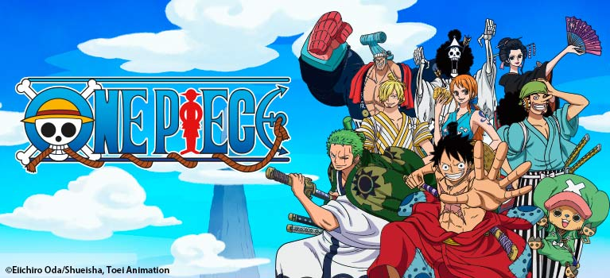

One Piece
One Piece (ワンピース, Wan Pīsu?) is a Shonen action-adventure manga written and drawn by Eiichiro Oda, serialized in the anthology Weekly Shonen Jump. Set in a fantasy world dominated by pirates, it mainly depicts the adventures of Monkey D. Luffy, a headstrong young captain with the power to stretch like rubber.
Visit FandomGo back